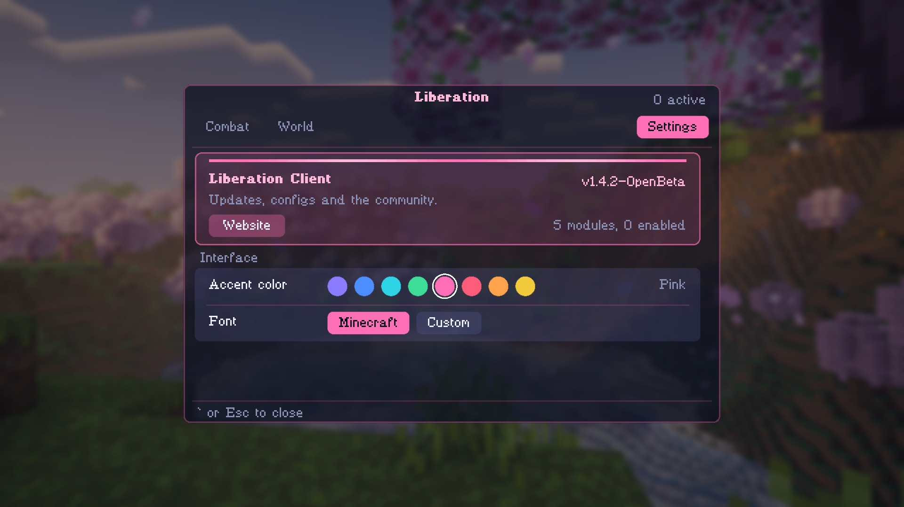
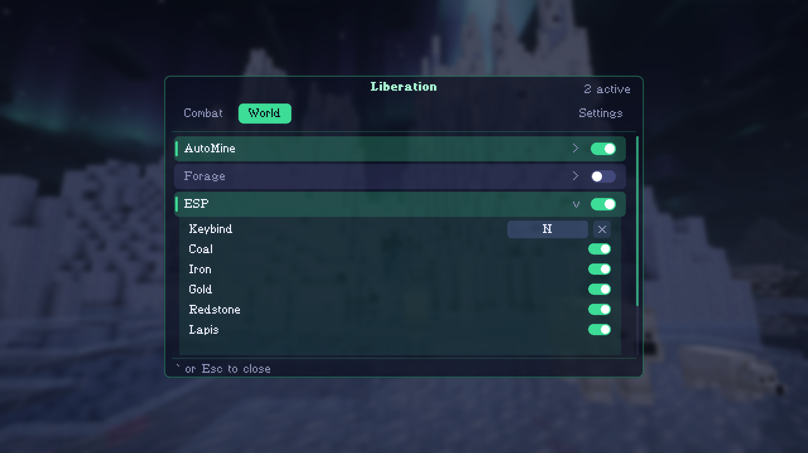

Liberation
A client mod for Minecraft single player. Mine ores, fight mobs and see through walls, all from one menu you can restyle.
V1.4.2 Fabric, Minecraft 26.3. Made for playing with friends on your own worlds.
Download the mod
Try a color


What it does
- AutoMineWalks to the ores you pick, aims like a person and mines them. Coal, iron, gold, redstone, lapis, diamond and emerald.
- KillAttacks the mobs you choose in range, with a natural click rate and smooth aiming.
- ESPOutlines ores through walls so you can see where to dig.
- HitboxDraws a box around every mob nearby, through walls.
- MenuTabs for Combat and World, a live list of what is switched on, and a Settings tab for accent color and font.
Install it
- Install Fabric Loader for Minecraft 26.3.
- Download Fabric API and the Liberation jar from the button above.
- Put both jars in your mods folder and start the game.
- Open a single player world and press ` to open the menu.
Keys
| Open the menu | ` |
|---|---|
| AutoMine | M |
| Kill | K |
| Hitbox | B |
| ESP | N |
Every key can be changed from the menu.
Single player only. Most multiplayer servers ban this kind of mod, so keep it to your own worlds.